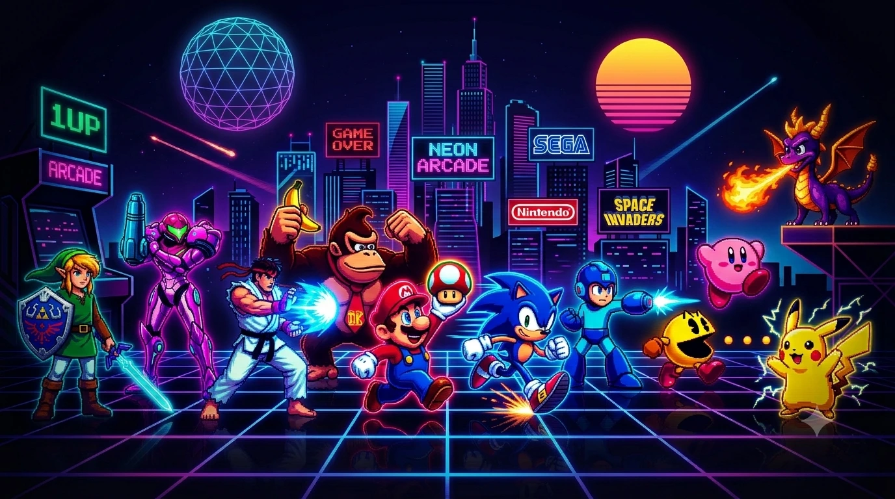

Οι υπερπαιχνιδάρες Blasphemous I & II

Αν υπάρχει κάτι που μπορεί να τραβήξει την προσοχή ενός gamer με αδυναμία στην pixel art αισθητική των χρυσών εποχών του SNES και του Mega…

Αν υπάρχει κάτι που μπορεί να τραβήξει την προσοχή ενός gamer με αδυναμία στην pixel art αισθητική των χρυσών εποχών του SNES και του Mega…

Ένα μακρινό ταξίδι στα "Άγια Δισκοπότηρα" του Retro Gaming Η 😘16-bit εποχή αποτέλεσε ίσως την πιο καθοριστική και ρομαντική περίοδο στην ιστορία των videogames. Ο…

⚔️ Dead Cells Review: Η Απόλυτη Εθιστική Χορογραφία Θανάτου, Αναγέννησης και η Πλήρης Ανατομία των DLCs Όταν η Motion Twin (και στη συνέχεια η Evil…

Στην εποχή του Super Nintendo Entertainment System (16-bit), οι developers έπρεπε να κάνουν θαύματα για να στριμώξουν τεράστιους κόσμους μέσα σε cartridges λίγων Megabytes. Κι…

Αν θέλετε να στήσετε το δικό σας arcade μηχάνημα ή απλώς μια ρετρό κονσόλα για το σαλόνι σας, το Raspberry Pi είναι το ιδανικό hardware.

Η χρυσή εποχή των 16-bit συσκευών είχε έναν αδιαμφισβήτητο βασιλιά που έφερε την arcade εμπειρία στο σαλόνι μας. Το Sega Mega Drive δεν ήταν απλώς…

Streets of Rage 4: Η Επιστροφή των Θεών του Arcade Όταν ανακοινώθηκε το Streets of Rage 4, πάνω από δύο δεκαετίες μετά το θρυλικό τρίτο…